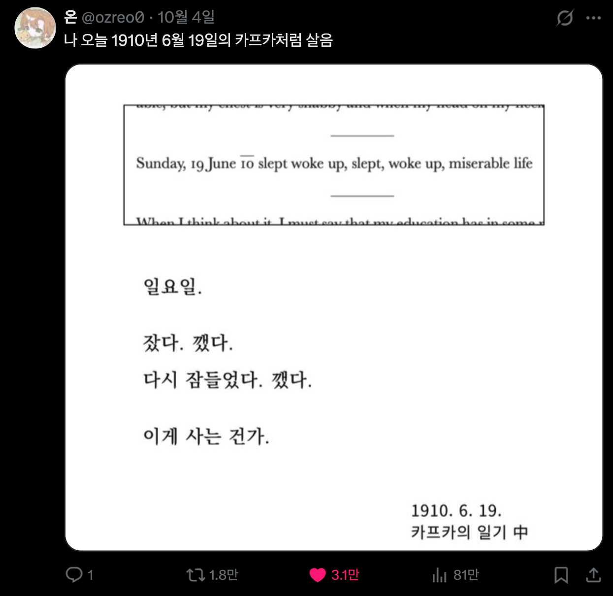

https://x.com/ozreo0/status/2106721057784869083?s=20
그리고 내일도 1910년 6월 19일의 카프카처럼 살 것 같음

https://x.com/ozreo0/status/2106721057784869083?s=20
그리고 내일도 1910년 6월 19일의 카프카처럼 살 것 같음
나 진짜 진지하게 오늘이 월요일인줄 알고 내일이 화요일인줄 알았음
연휴 하루 더 남은 줄 알고 새벽까지 술 마시면서 놀다가 정신차리고 밤샌 상태로 출근 지하철 타고있다
시발 시간 감각이 사라졌나봐
아이고...
도둑맞은 하루
너 이새끼 닉네임이
미저러블 라이프
인간의 삶이라던가 없는기가?
팩트는 뒤지게 개운하다는거임